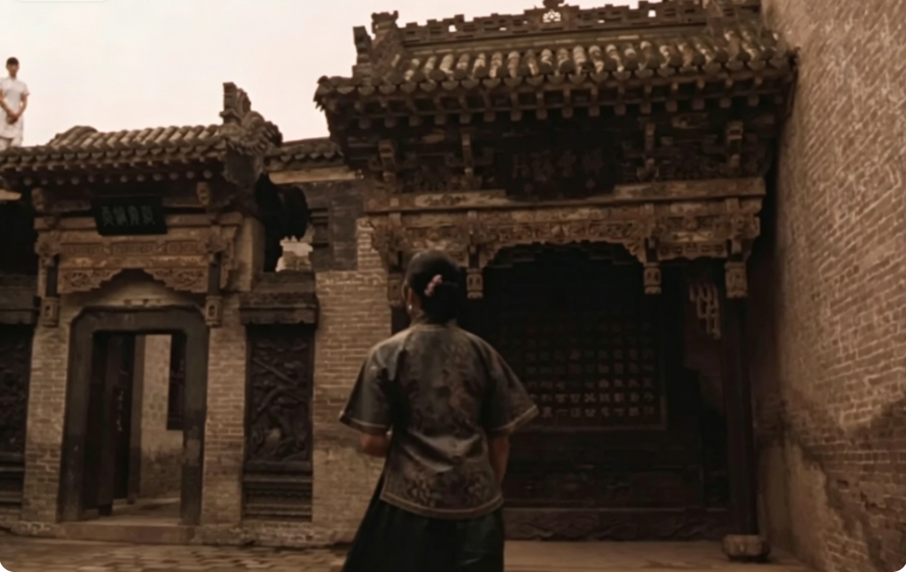

第 1 站
主甬道
站到甬道中后段，拍全身和背影。等路人走到远处也没关系，反而能带出空间尺度。
路线原则很简单：先拍最容易被人流占住的大景，再向院内收细节。顺着主线走，基本不用折返，适合边逛边拍。
站到甬道中后段，拍全身和背影。等路人走到远处也没关系，反而能带出空间尺度。

用 2 倍镜头拍半身，人物侧身或正面都稳。背景纹理不要切得太碎。
找门框做前景，人物站在门内或门外，拍出“院中有院”的层次。

拍宽一点，保留楼体、檐口和地面。人物不要太靠近镜头，避免压住建筑。

适合从大景切到细节。拍手持扇子、回头、低头看纹样，画面更静。
用竖构图收住两侧墙线，人物走在画面远端，拍出深宅大院的压缩感。

最后补拍空镜、局部和安静的人像，给整组照片一个收束。